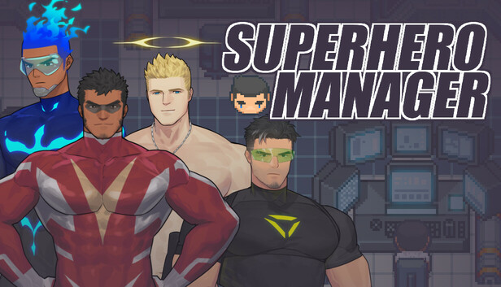
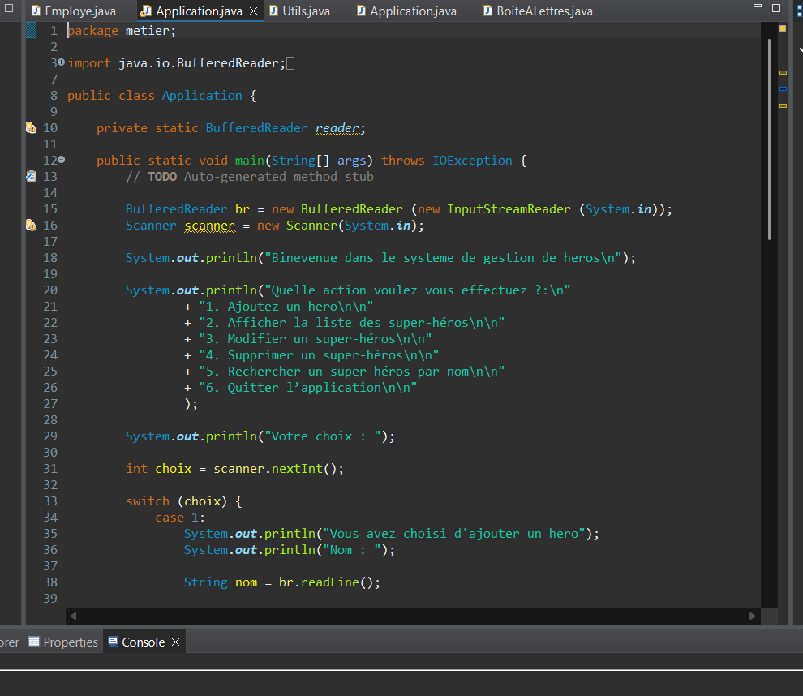
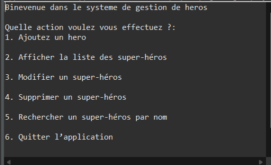

Ce projet a été réalisé dans le cadre de ma formation BTS SIO, avec pour objectif de concevoir une application en ligne de commande pour un début permettant de gérer des super héros.
L’une des fonctionnalités principales de l'application est de pouvoir enregistrer des super héros avec des détails tels que le nom, la description, les pouvoirs et l'origine.
Les super héros enregistrés peuvent être affichés de manière organisée, permettant une consultation facile et rapide.
Les super héros peuvent être supprimés si nécessaire, tout en maintenant l'intégrité des données.
Les super héros peuvent être modifiés si nécessaire, tout en maintenant l'intégrité des données.
Les super héros peuvent être recherchés parmi les enregistrements existants, facilitant leur localisation.
Utilisation de base de données pour stocker les données des super héros, avec une gestion efficace de la lecture et de l’écriture.
Maîtrise du langage Java pour implémenter les fonctionnalités de l’application et assurer une expérience utilisateur fluide.
Structuration claire du code avec séparation des responsabilités pour un projet maintenable et évolutif.
Vérification systématique des entrées utilisateurs afin de garantir l’intégrité et la cohérence des données.
Structuration d’un projet professionnel avec logique, rigueur et respect des bonnes pratiques de développement.



Ce projet m’a permis de mettre en pratique des concepts fondamentaux du développement logiciel, tout en respectant des contraintes réalistes de gestion du personnel.
Il constitue une base solide pour une future évolution vers :